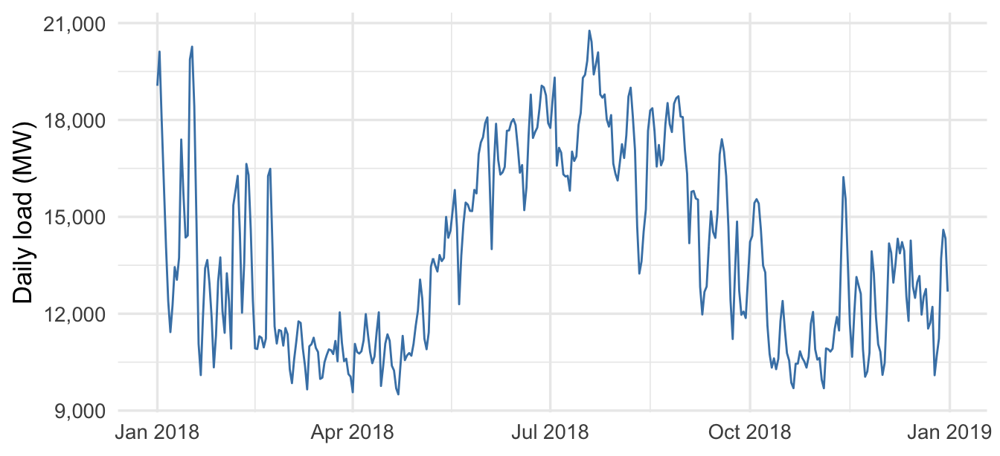
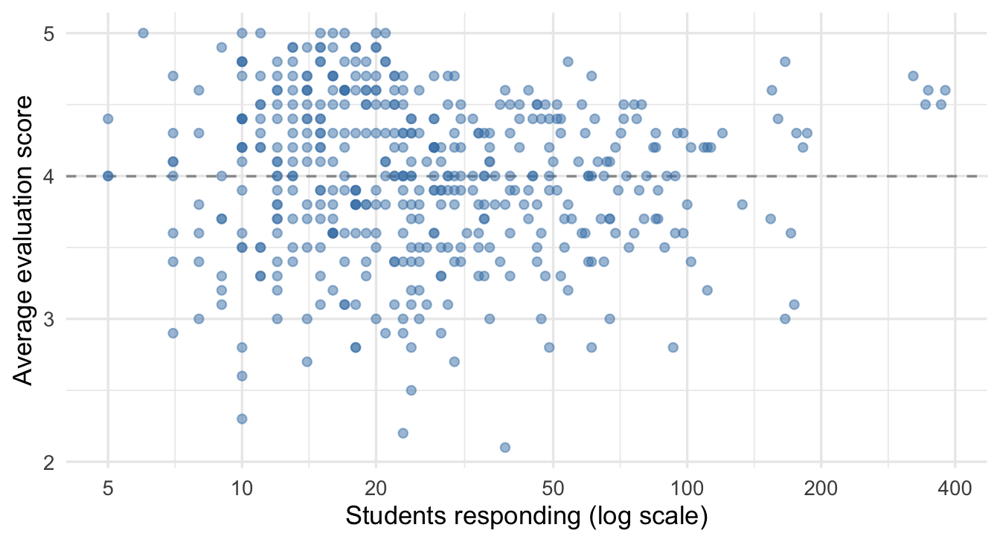
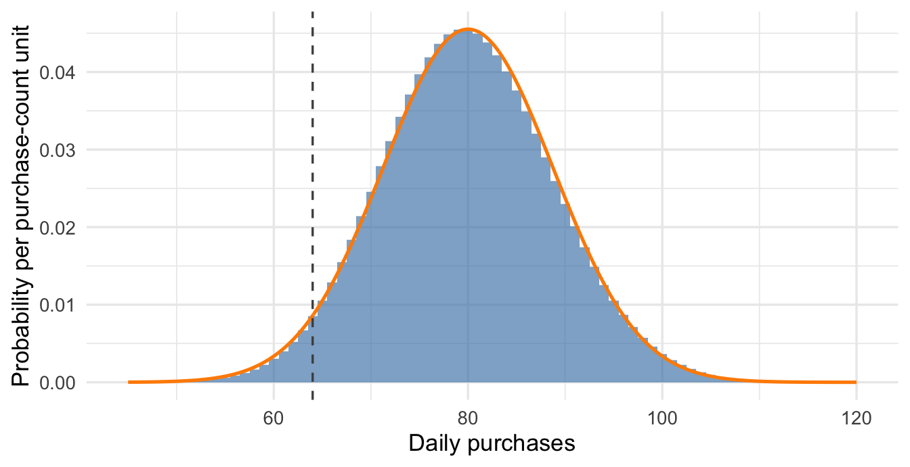

15 Sums, Averages, and the Central Limit Theorem
All the rules from the last chapter about combining two random variables have analogues for settings where we combine multiple random variables: portfolios that hold many assets, forecasted total revenues added up from many branches. The math involved gets unwieldy, however — we end up with long formulas involving all the possible covariances between the random variables. (The rules work similarly to paired variables: positive covariances increase variability relative to independence and negative covariances decrease it.) In one very special case — when the random variables are independent — there are simple rules for computing their means, variances, and standard deviations. By repeatedly applying the rules in that chapter we can show that means/expected values add (this is always true, irrespective of dependence between the random variables) and that variances add (this holds when all pairwise covariances are zero, as independence guarantees).
Example 15.1: Thaler’s investment decision
In Misbehaving, Richard Thaler recounts a meeting with a CEO and the 23 executives who ran the company’s divisions. He offered each executive a hypothetical project that would earn $2 million with probability 0.5 or lose $1 million with probability 0.5. Only three executives would take it, but the CEO wanted all 23 projects if their outcomes were independent. Why might an individual executive decline while the CEO wanted them all to accept? Was the CEO making a sensible business decision?
15.1 Sums and averages
Suppose we repeat the same random process independently: each project faces the same payoff distribution, or each customer order faces the same distribution of processing times. We call the resulting random variables independent and identically distributed, abbreviated iid.
Definition 15.1: Independent and identically distributed random variables
Random variables \(X_1,\ldots,X_n\) are independent and identically distributed (iid) when they are independent of one another and all have the same distribution.
Having the same mean and variance alone does not make distributions identical; their probabilities and shapes must also agree. For the sums and averages below, suppose the common distribution has a finite mean \(\mu\) and finite variance \(\sigma^2\).
NoteSums and averages of iid random variables
The sum \(S_n=X_1+X_2+\cdots+X_n\) has
\[ E[S_n]=n\mu,\qquad \operatorname{Var}(S_n)=n\sigma^2,\qquad \operatorname{SD}(S_n)=\sqrt{n}\,\sigma. \]
The average \(\bar X=S_n/n\) has
\[ E[\bar X]=\mu,\qquad \operatorname{Var}(\bar X)=\frac{\sigma^2}{n},\qquad \operatorname{SD}(\bar X)=\frac{\sigma}{\sqrt n}. \]
The sum’s mean grows in proportion to the number of terms, while its standard deviation grows with the square root of that number. The average keeps the original mean and has a smaller standard deviation.
Means add whether or not the variables are independent. Independence removes the covariance terms from the variance of the sum, leaving \(n\) copies of \(\sigma^2\). Dividing the sum by \(n\) divides its variance by \(n^2\), giving \(n\sigma^2/n^2=\sigma^2/n\) for the average.
Focus on the sum for a moment, which is the relevant metric for Thaler’s example: The total expected payout increases with more projects. So does the standard deviation — the relevant spread metric, since it’s also in million-dollar units — except it increases much more slowly, as the square root of \(n\). This difference is what makes the risk calculation so different between individual division heads and the CEO, as we’ll see below.
Let \(X\) be one of Thaler’s project payoffs in millions of dollars. Its mean and variance are
\[ E[X]=0.5(2)+0.5(-1)=0.5, \]
\[ \operatorname{Var}(X)=0.5(2-0.5)^2+0.5(-1-0.5)^2=2.25. \]
The expected profit is $500,000, and the standard deviation is $1.5 million. A positive expected payoff does not remove the downside: an executive taking one project still faces a probability of 0.5 of losing $1 million. An executive judged on their own division’s results might reasonably be unwilling to risk that loss.
The CEO is considering the combined outcome of all 23 projects. Under the independence assumption, the total payoff \(S_{23} = X_1+X_2+\cdots+X_{23}\) has
\[ E[S_{23}]=23(0.5)=11.5,\qquad \operatorname{Var}(S_{23})=23(2.25)=51.75, \]
so its standard deviation is \(\sqrt{51.75}\approx7.19\) million dollars. Expected total profit grows by a factor of 23, while its standard deviation grows by only \(\sqrt{23}\). The company takes on more total uncertainty, but less uncertainty relative to its expected profit.
The average payoff per project still has mean $0.5 million. Its standard deviation is
\[ \operatorname{SD}(\bar X)=\frac{1.5}{\sqrt{23}}\approx0.31 \]
million dollars, compared with $1.5 million for a single project. This reduction helps explain the CEO’s willingness to accept the bundle. It does not establish that accepting every project is optimal for every firm; that decision also depends on the firm’s ability to absorb losses and the uses of its capital.
What is the probability that the 23 projects lose money in total? Their mean and standard deviation alone do not determine that probability. We need the distribution of the total, which we approximate in the next section.
Exercise 15.1: Daily service fees
A repair company models the fees for 25 service visits as iid, with mean $160 and standard deviation $40 per visit. Find the mean and standard deviation of the day’s total fees and its average fee per visit.
Solution
The total has mean \(25(160)=4{,}000\) dollars and standard deviation \(\sqrt{25}(40)=200\) dollars. Across repeated days, total fees vary around $4,000 with a standard deviation of $200.
The average has mean $160 and standard deviation \(40/\sqrt{25}=8\) dollars. Across repeated days, the average fee per visit varies around $160 with a standard deviation of $8.
Exercise 15.2: Sales on a rainy day
A company uses an iid model for daily sales at its 16 outdoor kiosks, each with mean $500 and standard deviation $100. All kiosks are in the same city, and rainy days tend to reduce sales at all of them. If the individual means and standard deviations remain correct, explain which of the model’s results for total sales would still hold: a mean of $8,000 or a standard deviation of $400.
Solution
The mean of $8,000 still holds because means add even under dependence. Shared weather makes kiosk sales tend to move together, so the total’s standard deviation would be larger than $400. We need information about the dependence to calculate how much larger.
15.2 The Central Limit Theorem
Figure 15.1 shows the distributions of total payoff for 1, 5, and 23 independent projects. The orange curves are normal distributions with the same means and variances as the totals.
An individual project’s payoff is far from normal: it has only two possible values. Add five independent projects and the total starts to take a bell shape. Add 23 and a normal curve describes the shape of the distribution fairly well. The individual projects still have the same two possible payoffs; it is their total that has become approximately normal. This webapp simulates portfolios and accumulates the results into a histogram to verify the calculation.
The Central Limit Theorem (CLT) says that this happens quite generally when we add many independent draws from the same distribution. The individual variables do not need to be normally distributed.
NoteThe central limit theorem
For iid random variables with mean \(\mu\) and finite, positive variance \(\sigma^2\), the sum and average have approximately normal distributions when \(n\) is sufficiently large:
\[ S_n\ \approx\ N(n\mu,n\sigma^2),\qquad \bar X\ \approx\ N\left(\mu,\frac{\sigma^2}{n}\right). \]
The second parameter in \(N(\text{mean},\text{variance})\) is the variance. The means and variances come from the rules for sums and averages; the CLT adds the approximately normal shape.
The average is the total divided by \(n\), so it has the same distributional shape on a different scale. For the 23 projects, the average payoff is approximately normal with mean 0.5 and standard deviation about 0.31 million dollars.
We can now approximate the probability of a loss. The total payoff has mean 11.5 and variance 51.75, giving
\[ S_{23}\ \approx\ N(11.5,51.75). \]
A total of zero lies about 1.60 standard deviations below the mean, so the probability we lose money is rather small — 0.055 under this approximation. In Figure 15.2, the shaded normal area to the left of zero represents this approximate probability.

Technical detail 15.1: Computing the loss probability exactly
Since the projects are independent and the success probability is 0.5, each possible sequence of successes and failures is equally likely. We can compute the probability of a particular total payoff by counting the sequences that produce it and dividing by the total number of sequences.
In Paths to a Payoff, set \(n=4\) and keep the payoff at +$2M / −$1M. Click “Next sequence” to follow one sequence of project outcomes, then click the +$2M total or its bar in the lower plot. Six of the 16 possible sequences reach this total: each has two successes and two failures, in a different order. Its probability is therefore \(6/16=0.375\).
With 23 projects, there are \(2^{23}=\) 8,388,608 equally likely sequences. We lose money if fewer than eight projects succeed: seven successes and 16 failures give \(7(2)-16=-2\) million dollars, while eight successes and 15 failures give \(8(2)-15=1\) million. Counting the sequences with zero through seven successes gives 390,656 losing sequences. Dividing by \(2^{23}\) gives an exact loss probability of about 0.0466, compared with 0.055 from the normal approximation.
There is a shortcut if you know one more probability distribution. The binomial distribution is a discrete distribution that does this counting for us. A random variable has a binomial distribution with \(n\) trials and success probability \(p\) when it counts the successes in \(n\) independent trials, each with success probability \(p\). Equivalently, it is the sum of \(n\) independent binary variables that equal 1 on success and 0 on failure.
Here the number of successful projects has a binomial distribution with \(n=23\) and \(p=0.5\). Its cumulative distribution function at seven gives the probability of seven or fewer successes, which is the exact loss probability computed above.
WarningIndependence matters
Independence is a critical assumption here. If all divisions’ projects succeed or fail together, the total payoff is either $46 million or −$23 million, each with probability 0.5. Its loss probability remains 0.5, and averaging does not reduce the standard deviation of the payoff per project. If common factors make all the projects simultaneously more or less likely to succeed, we observe a similar effect, just less extreme.
NoteHow large must n be?
The number of terms needed for a good normal approximation depends on the original distribution. Strong skew or rare extreme outcomes can require many more terms than a symmetric distribution like the project payoff. While you may read \(n=30\) as a common convention or rule of thumb, there is no single cutoff that works for every distribution.
15.3 Practice
Exercise 15.3: Order processing times
A fulfillment center models processing times for individual orders as iid, with mean 12 minutes and standard deviation 6 minutes. The distribution is right-skewed.
- Find the mean and standard deviation of the total processing time for 100 orders.
- Find the mean and standard deviation of the average processing time for those orders. How many orders would reduce the average’s standard deviation to 0.3 minutes?
- If a normal approximation is adequate for this model, approximate the probability that the total exceeds 1,320 minutes. Express the same event using the average processing time.
- Suppose a common equipment slowdown affects all 100 orders. Explain why the iid calculation may understate the variability of their total.
Solution
The total has mean \(100(12)=1{,}200\) minutes and standard deviation \(\sqrt{100}(6)=60\) minutes. The average has mean 12 minutes and standard deviation \(6/\sqrt{100}=0.6\) minutes. Reducing that standard deviation to 0.3 requires 400 orders.
The threshold 1,320 is two standard deviations above the total’s mean, giving an approximate probability \(\Pr(Z>2)\approx0.0228\). The same event is an average above 13.2 minutes, also two standard deviations above its mean.
A shared slowdown can make processing times move together, producing positive covariance terms. Adding only the individual variances omits those terms and can understate total variability.
Exercise 15.4: Rare warranty payouts
A warranty model assigns each policy a payout of $1,000 with probability 0.001 and zero otherwise, independently across policies. For 100 policies, the probability that every payout is zero is about 0.905. An analyst says, “With 100 policies, the central limit theorem makes both individual payouts and the average payout approximately normal.” Assess this claim using the stated model.
Solution
An individual payout still takes only the values zero and $1,000; adding policies does not change its distribution. The central limit theorem concerns the shape of sums and averages as the number of iid draws grows.
Here even the average is zero with probability about 0.905, with occasional positive values. A normal distribution would not describe that shape well. Although the model satisfies the theorem’s assumptions, 100 policies are not enough for a good normal approximation in this rare-payout model.
Exercise 15.5: Staffing a call center
A support center handles 400 calls on a typical weekday. Handling time per call has mean 6 minutes and standard deviation 5 minutes. The distribution is strongly right-skewed: most calls are short and a few run past half an hour. Model the 400 handling times as iid.
- Find the mean and standard deviation of the total handling time for the day.
- Individual handling times are far from normal. Does knowing that there are 400 iid calls guarantee a good normal approximation for the day’s total? What else would you want to know about handling times?
- For parts 3 and 4, assume a normal approximation is adequate. The center schedules enough agent-minutes to cover the total on about 97.5% of days. How many minutes is that? If each agent spends 300 minutes a day on calls, how many agents does that require?
- The operations lead reports that “average handle time is remarkably stable, 6.0 minutes plus or minus 0.25 from day to day,” and proposes scheduling exactly 2,400 agent-minutes. Where does the 0.25 come from, and why is it the wrong number for this decision? What fraction of days would 2,400 minutes cover?
- Suppose half the days bring 300 calls and half bring 500. Handling times still follow the same iid model, independently of the number of calls. Which assumption of part 1 changes? Explain why the daily total now varies more than your answer there.
Solution
- The total has mean \(400(6)=2{,}400\) minutes and standard deviation \(\sqrt{400}(5)=100\) minutes.
- No. The adequacy of the approximation depends on the distribution, especially its right tail, as the rare-payout exercise illustrates. A distribution or data showing how often very long calls occur would help assess the approximation; the mean, standard deviation, and sample size alone do not settle it.
- Under the normal approximation, about 97.5% of days have totals below the mean plus two standard deviations, \(2{,}400+2(100)=2{,}600\) minutes. At 300 minutes per agent that is \(2{,}600/300\approx8.7\), so nine agents.
- The 0.25 is the standard deviation of the daily average handling time, \(5/\sqrt{400}\). Staffing is a question about the total, whose standard deviation is 100 minutes, four hundred times larger. Both numbers describe the same variability on different scales, and the lead has read the stability of the average as if it applied to the total. Scheduling 2,400 minutes covers the mean, so roughly half of all days would run over.
- The model fixes the number of terms at 400. When the number of calls is itself random, the total varies for two reasons: how long each call takes and how many calls arrive. Days with 500 calls have totals centered at 3,000 minutes and days with 300 calls at 1,800, so the day-to-day variability of the total is larger than 100 minutes. The iid calculation understates it.
Exercise 15.6: Do daily loads add like iid draws?
The ercot_daily_2018 data record the average hourly electricity demand in the Dallas–Fort Worth zone for each of the 365 days of 2018, in megawatts. Daily load has a sample mean of 13,873 MW and a sample standard deviation of 2,932 MW. Figure 15.3 shows the series.

- Suppose daily loads were iid draws from a distribution with this mean and standard deviation. Find the mean and standard deviation of a seven-day total.
- Splitting 2018 into 52 consecutive seven-day blocks, the block totals have a sample mean of 97,132 MW and a sample standard deviation of 18,687 MW. Compare both with your answers to part 1.
- Use Figure 15.3 and the variance rule for sums of dependent variables to explain the discrepancy you found. The sample correlation between one day’s load and the next day’s is 0.92.
- One of the two iid results survived and the other did not. Why?
- A fuel planner uses the iid standard deviation to set a buffer of two standard deviations around the expected weekly total. In 2018, 58% of the weekly totals fell outside that buffer. What did the planner get wrong, and what would a better planning model need to include?
Solution
- Under the iid model, the seven-day total has mean \(7(13,873)\approx97,109\) MW and standard deviation \(\sqrt7(2,932)\approx7,757\) MW.
- The mean matches almost exactly. The standard deviation of the observed weekly totals, 18,687 MW, is about 2.4 times the iid prediction.
- Consecutive days are strongly positively dependent. A hot day in July is followed by another hot day, and a mild day in April by another mild one, so the seven loads in a block tend to be all high or all low together. The variance of a sum of dependent variables adds every pairwise covariance to the sum of the variances, and with a day-to-day correlation of 0.92 those covariance terms are large and positive. The iid calculation drops them all.
- Means add whether or not the terms are dependent, so the iid prediction for the mean of a weekly total is correct for any dependence structure. Variances add when pairwise covariances are zero; independence is one condition that guarantees this. Weather-driven demand has positive covariances, which the iid calculation leaves out.
- The observed weekly standard deviation is about 2.4 times the one used to set the buffer, and 58% of the weekly totals fall outside it. A two-standard-deviation buffer has approximately 95% coverage only with an appropriate distributional approximation, such as a normal distribution. A usable model has to account for the dependence, most directly by modeling the season and the forecast weather rather than treating each day as a fresh draw from the annual distribution.
Exercise 15.7: The law of averages
A subscription business budgets 1,000 new signups per week and uses a 52-week planning year, for an annual budget of 52,000. It models weekly signups as iid with mean 1,000 and standard deviation 100. After 13 weeks, signups total 12,750, which is 250 behind budget. There are 39 weeks left. The marketing lead tells the board, “The law of averages will bring us back on budget by year end.”
- Given the first 13 weeks’ result, find the expected year-end total and the expected year-end shortfall.
- Find the standard deviation of total signups over the remaining 39 weeks. Assume a normal approximation is adequate for that total. Find the probability that the year ends at or above the 52,000 budget.
- If the remaining weeks average exactly 1,000 signups, compare the total shortfall after 13 weeks and after 52 weeks. Then compare the shortfall per week at those two times. Which shortfall gets smaller?
- Rewrite the marketing lead’s sentence for the board. Include the expected year-end total and explain whether the model predicts that future weeks will compensate for the first 13 weeks’ shortfall.
Solution
- The remaining weeks have expected total \(39(1{,}000)=39{,}000\), so the expected year-end total is \(12{,}750+39{,}000=51{,}750\). The expected shortfall remains 250. Independence means the low total so far does not change the distribution of future signups.
- The remaining total has standard deviation \(100\sqrt{39}\approx624.5\) signups. Reaching budget requires at least \(52{,}000-12{,}750=39{,}250\) more signups, or \(250/(100\sqrt{39})\approx0.40\) standard deviations above the remaining total’s mean. Thus the probability is approximately \(\Pr(Z\ge 0.40)=0.344\).
- The total shortfall is 250 at both times. The shortfall per week falls from \(250/13\approx19.2\) to \(250/52\approx4.8\) signups. Spreading the same deficit over more weeks brings the average closer to 1,000 without recovering the missing signups.
- “Our model predicts a year-end total of 51,750, still 250 below budget. It predicts 1,000 signups in each remaining week, with no extra signups to compensate for the earlier shortfall.”
Exercise 15.8: Small sections at both ends of the rankings
The hamermesh_evals data record the average student evaluation score (eval, on a 1–5 scale) for 463 course sections at UT Austin, along with the number of students who submitted an evaluation (students). Each section’s score is the average of the ratings its respondents gave. Figure 15.4 plots the score against the number of respondents, and Table 15.1 summarizes the scores by respondent group.

| Students responding | Sections | SD of section scores | Share at or beyond 4.7 / 3.0 |
|---|---|---|---|
| 5 to 15 | 131 | 0.59 | 24% |
| 16 to 30 | 175 | 0.59 | 22% |
| 31 to 60 | 90 | 0.47 | 6% |
| 61 or more | 67 | 0.48 | 10% |
- Suppose every instructor were equally good, so each student’s rating is a draw with the same mean and the same standard deviation \(\sigma\). Assume ratings within each section are independent, and each section’s score is the average of its \(n\) ratings. What would the rules for averages predict about the spread of section scores across sections with 10 respondents versus sections with 100?
- Is that pattern visible in Figure 15.4 and Table 15.1? Describe what you see.
- A dean proposes an annual award for the section with the highest score. Under the model in part 1, which sections would you expect to be overrepresented among unusually high scores, and why?
- From 15 respondents to 60, the rule in part 1 predicts the spread should halve. The table shows a smaller reduction. Explain what is missing from the model in part 1.
Solution
- A section score would be an average of \(n\) iid ratings, with standard deviation \(\sigma/\sqrt n\) across sections. Sections with 10 respondents would have scores about \(\sqrt{10}\approx3.2\) times as spread out as sections with 100, in both directions from the common mean.
- Yes, partly. The scatter narrows from left to right: most scores at or beyond 4.7 or 3.0 come from sections with 30 or fewer respondents, and the standard deviation of scores falls from about 0.59 in the smallest group to about 0.47 for sections with 31 to 60 respondents. The share of extreme scores drops from roughly 24% to 6%.
- Under the model in part 1, small sections have the most variable averages, so we expect them to be overrepresented among both unusually high and unusually low scores. The winner also depends on how many sections of each size there are and on the rating distributions. The award risks rewarding sampling variability as well as teaching quality.
- Instructors and courses genuinely differ, so section scores vary for two reasons: the instructor’s true rating varies across sections, and each score is a noisy average around that rating. Only the second source shrinks with \(n\). Once \(n\) is large enough that the noise is small, the remaining spread reflects real differences between instructors and courses, and it stays roughly constant as \(n\) grows.
Exercise 15.9: A loan book of ten thousand
A lender holds 10,000 one-year loans. Its model says each loan defaults with probability 0.03, independently of the others, and a default costs the lender $20,000.
- The number of defaults is a sum of 10,000 random variables that each equal 1 for a default and 0 otherwise. Find its mean and standard deviation.
- Find the mean and standard deviation of the year’s total default losses.
- The lender sets aside enough capital to cover losses in about 97.5% of years. Using a normal approximation, how much is that? Is the approximation reasonable here?
- Under this model, the probability of more than 400 defaults is essentially zero. Real lenders hold far more capital than part 3 suggests. Which assumption of the model is the problem, and what happens to the standard deviation of total losses when it fails?
- The lender could instead hold 100 loans, each with a fixed loss of $2 million if it defaults. Defaults remain independent, with probability 0.03 each. Compare the mean and standard deviation of total losses for the two loan books, and explain the difference.
Solution
- Each indicator has mean 0.03 and variance \(0.03(0.97)=0.0291\). The count has mean \(10{,}000(0.03)=300\) defaults and standard deviation \(\sqrt{10{,}000(0.0291)}\approx17.1\) defaults.
- Losses are $20,000 times the count: mean $6.0 million and standard deviation about $341,000.
- The mean plus two standard deviations is about $6.68 million. The normal approximation is reasonable: the count is a sum of 10,000 independent terms, and even though each term is far from normal, the central limit theorem applies with this many.
- Independence is the problem. In a recession, the same job losses and falling asset prices push many borrowers toward default at once, so the indicators are positively correlated. The variance of the count then includes millions of positive covariance terms the model omits, and the standard deviation of losses can be several times $341,000. The model’s near-zero probability of more than 400 defaults describes a world with no shared shocks that raise default probabilities together.
- Both books have expected losses of $6.0 million. With 100 loans the count of defaults has mean 3 and standard deviation \(\sqrt{100(0.0291)}\approx1.71\), so losses have standard deviation about $3.4 million, ten times the small-loan book’s. Spreading the same exposure across a hundred times as many borrowers cuts the standard deviation by a factor of \(\sqrt{100}=10\), provided the defaults are independent.
Exercise 15.10: Do daily returns add like iid draws?
The weekly-load exercise above found that daily electricity loads do not add like iid draws. Stock returns are a different case. The EuStockMarkets data give 1,859 daily returns on Germany’s DAX index from 1991 through 1998, with sample mean 0.071% and sample standard deviation 1.03% per day. Adding the returns over a block of \(k\) consecutive days gives approximately the \(k\)-day return. Table 15.2 compares the sample mean and standard deviation of the block totals with the iid predictions.
| Days per block | Blocks | Mean of block sums | iid prediction kμ | SD of block sums | iid prediction √k σ |
|---|---|---|---|---|---|
| 1 | 1859 | 0.07% | 0.07% | 1.03% | 1.03% |
| 5 | 371 | 0.35% | 0.35% | 2.42% | 2.30% |
| 20 | 92 | 1.56% | 1.41% | 4.50% | 4.60% |
| 60 | 30 | 4.42% | 4.23% | 7.72% | 7.96% |
- Compute the iid predictions for the 20-day block by hand from the daily mean and standard deviation, and check them against the table.
- Compare the observed and predicted standard deviations across the blocks. Do daily returns add like iid draws?
- The sample correlation between one day’s return and the next is -0.001. Compare this with the 0.92 for daily loads, and explain why returns and loads behave so differently. Think about what a trader would do if tomorrow’s return were predictable from today’s.
- The chapter’s note on annualization in Chapter 14 multiplies a weekly standard deviation by \(\sqrt{52}\). Which findings provide limited support for that scaling rule, and what assumptions does annual scaling still require?
- Returns being uncorrelated from day to day does not make them identically distributed. Name one way daily returns in different periods might differ, and say whether it affects the mean rule, the variance rule, or the normal approximation.
Solution
- The 20-day prediction is a mean of \(20(0.071\%)\approx1.41\%\) and a standard deviation of \(\sqrt{20}(1.03\%)\approx4.60\%\), matching the table.
- The observed standard deviations are close to the \(\sqrt{k}\) predictions at each block length. This supports using the rule as a rough description of these data. It does not establish independence: uncorrelated returns also satisfy the variance-addition rule, and the longest-block estimate uses only 30 blocks.
- The day-to-day correlation is essentially zero, against 0.92 for loads. Loads are driven by weather, which persists. Returns are driven by news, and any predictable pattern in returns would be exploited: if a high return today reliably signaled a high return tomorrow, traders would buy today, which raises today’s price and removes tomorrow’s gain. Competition drives the correlation toward zero.
- The \(\sqrt{52}\) scaling follows when the 52 weekly returns have a common variance and zero pairwise covariances. The DAX block standard deviations are close to the square-root predictions at 5, 20, and 60 days, giving limited empirical support for this type of scaling. That comparison does not establish the assumptions for 52 weeks or for the different assets used in Chapter 14.
- Volatility can change over time: returns during a crisis may have a larger standard deviation than returns in a calm year. Means still add. If covariances are zero, variances still add, but the sum is \(\sum_i\sigma_i^2\), which reduces to \(k\sigma^2\) only when the variances are equal. Unequal variances alone do not determine the shape of the sum. For example, independent normal returns still have a normal sum even when their variances differ. Assessing the normal approximation requires information about the distributions and their dependence.
Exercise 15.11: A conversion rate is an average
A landing page receives 2,000 visitors on a typical day. The company’s model says each visitor makes a purchase with probability 0.04, independently of the others. The daily conversion rate is the number of purchases divided by the number of visitors. Figure 15.5 compares the model’s exact purchase-count distribution with a normal approximation having the same mean and standard deviation.

- Let \(X_i\) equal 1 if visitor \(i\) purchases and 0 otherwise. Find the mean and variance of a single \(X_i\).
- Find the mean and standard deviation of the day’s number of purchases, and the mean and standard deviation of the day’s conversion rate. Compute the expected numbers of purchases and non-purchases. Use these counts and the figure to assess whether a normal approximation is reasonable despite the small purchase probability.
- On Monday the page converted 3.2% of 2,000 visitors, or 64 purchases. Calculate the z-score and use a normal approximation to estimate the probability of a conversion rate at or below 3.2%. Compare it with the model’s exact probability, 0.035.
- How many visitors would it take for the conversion rate’s standard deviation to fall to 0.1 percentage point? Explain why the count of purchases becomes more variable while the rate becomes less variable as the number of visitors grows.
- Optional comparison. Two page designs each receive 2,000 visitors. Assume the samples are independent and both designs have purchase probability 0.04. Find the standard deviation of the difference in their conversion rates and the approximate range within two standard deviations of zero. Does this calculation establish that one day per design would reliably detect a smaller improvement?
Solution
- \(E[X_i]=0.04\), and \(\operatorname{Var}(X_i)=0.04(1-0.04)=0.0384\): the variance of a 0/1 variable is \(p(1-p)\).
- The count has mean 80 and standard deviation \(\sqrt{2{,}000(0.0384)}\approx8.76\) purchases. The rate has mean 0.04 and standard deviation \(\sqrt{0.0384/2{,}000}\approx0.00438\), or 0.44 percentage points. The expected counts are 80 purchases and 1,920 non-purchases, so neither outcome is rare in a full day’s sample. The exact distribution in the figure is roughly symmetric and follows the normal curve closely.
- The z-score is \((64-80)/\sqrt{2{,}000(0.0384)}\approx-1.83\). The normal lower-tail probability is approximately 0.034, close to the exact probability 0.035. Such a low rate is unusual under the model, but one day’s result alone does not establish that the page has stopped working properly.
- Solving \(\sqrt{0.0384/n}=0.001\) gives \(n=38{,}400\) visitors. The count’s standard deviation grows with \(\sqrt n\); dividing by \(n\) to get the rate makes its standard deviation shrink as \(1/\sqrt n\).
- The difference has standard deviation \(\sqrt{2(0.0384)/2{,}000}\approx0.00620\), or 0.62 percentage points. Its approximate two-standard-deviation range is \(\pm 1.24\) percentage points. This describes differences when both purchase probabilities are 0.04. It does not give the probability of detecting an improvement when the designs have different purchase probabilities.
Exercise 15.12: Why the casino is a business
On an American roulette wheel, a $1 bet on red pays $1 if the ball lands on one of the 18 red pockets and loses the dollar otherwise; there are 18 black pockets and 2 green ones. Assume the wheel is fair and spins are independent, with one bet per spin. Take the casino’s point of view: its gain on one bet is \(+1\) with probability \(20/38\) and \(-1\) with probability \(18/38\).
- Find the mean and standard deviation of the casino’s gain on one $1 bet.
- Over a quiet evening with 100 such bets, find the mean and standard deviation of the casino’s total gain. Using a normal approximation, what is the probability the casino loses money on the evening?
- Over a month with 10,000 bets, repeat part 2.
- Over a year with one million bets, the casino’s expected gain is about $52,600. Find the standard deviation of its total gain, and explain why the ratio of the standard deviation to the mean shrinks as the number of bets grows.
- A high roller offers to place a single $1 million bet on red. From the casino’s side, compare the mean and standard deviation of this one bet with those of the million $1 bets in part 4, and explain why casinos set maximum bet limits.
Solution
- The mean is \((20-18)/38\approx0.0526\) dollars, the house edge of about 5.3 cents per dollar. The variance is \(1-0.0526^2\approx0.9972\), so the standard deviation is about 0.9986, essentially $1.
- The total over 100 bets has mean $5.26 and standard deviation \(\sqrt{100}(0.9986)\approx9.99\). Losing money means a total below zero, about \(5.26/9.99\approx0.53\) standard deviations below the mean, so the probability is about \(\Pr(Z<-0.53)\approx0.30\). On a quiet evening the casino loses at the red bets nearly a third of the time.
- Over 10,000 bets the mean is $526 and the standard deviation about $99.9. Zero is now \(5.27\) standard deviations below the mean, and the probability of a losing month is about \(7\times10^{-8}\).
- The standard deviation is \(\sqrt{10^6}(0.9986)\approx999\) dollars. The mean grows in proportion to the number of bets while the standard deviation grows with its square root, so their ratio is \(0.9986/(0.0526\sqrt{n})\approx19/\sqrt{n}\). At a million bets the standard deviation is under 2% of the mean, and the year’s profit from this bet is nearly certain.
- The single $1 million bet has the same expected gain, about $52,600, but its standard deviation is about $999,000: the casino either wins or loses roughly a million dollars. A million small bets and one large bet have identical expected value and standard deviations a thousandfold apart. Bet limits keep the casino in the first situation, where the edge is realized reliably, rather than the second, where a single spin can erase a year’s profit.
Exercise 15.13: A hundred orders from one hour
The deliveries data from the modeldata R package record the time from order to delivery, in minutes, for 10,012 orders at one restaurant. Table 15.3 compares all orders with those placed between 6:00 and 7:00 p.m.
| Group | Orders | Mean time (min) | SD (min) |
|---|---|---|---|
| All hours | 10012 | 26.1 | 6.9 |
| 6:00–7:00 p.m. | 1408 | 30.3 | 6.0 |
A manager wants to estimate the restaurant’s overall mean delivery time from 100 orders. For the calculations below, model the selected delivery times as independent draws from the indicated group, using the table’s means and standard deviations as the model parameters.
- If the 100 orders are drawn from all hours, what are the mean and standard deviation of their average delivery time?
- The manager instead uses 100 orders from 6:00 to 7:00 p.m. What mean would their average estimate? Use the table to explain why it would give a misleading estimate of the overall mean even with 100 orders.
- Suppose the manager wants the mean for the 6 p.m. hour specifically. Which group should the orders come from, and what standard deviation does the independent-draw model predict for their average? Would selecting orders from one actual evening necessarily satisfy that model?
Solution
- The average has mean 26.1 minutes and standard deviation \(\sigma/\sqrt{100}\), about 0.69 minutes.
- It estimates the 6 p.m. mean, 30.3 minutes, rather than the overall mean of 26.1 minutes. A larger sample from this hour would estimate that hour’s mean more precisely, but would not make it representative of all hours.
- Draw from orders placed between 6:00 and 7:00 p.m. Under the stated model, the average of 100 has standard deviation \(6.0/\sqrt{100}\approx0.60\) minutes. Independence is an assumption: orders from one evening may share unusually heavy traffic or a kitchen delay. Choosing the right hour identifies the population of interest but does not establish independence.
Data used in this section
- ERCOT Hourly Load and Temperature Panel supplies the 2018 daily loads.
- Course Evaluations and Instructor Appearance supplies the section scores.
EuStockMarkets, distributed with R, supplies the daily DAX levels, 1991–1998.deliveriesfrom themodeldatapackage supplies the restaurant delivery times (Kuhn 2024).